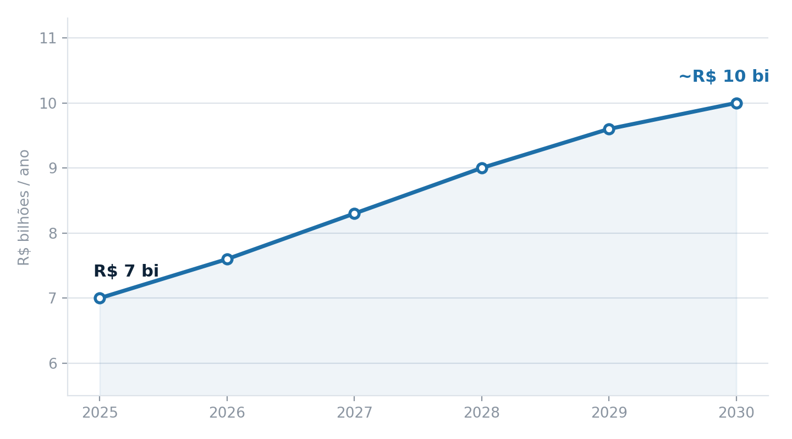
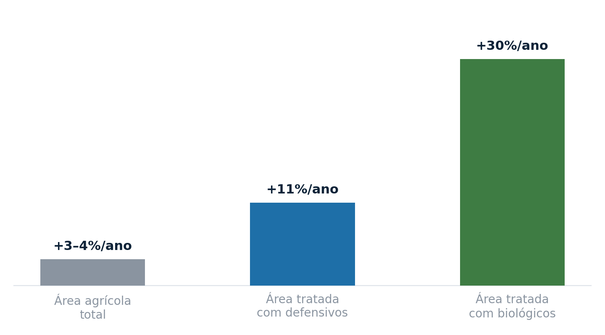

A expansão dos bioinsumos no campo brasileiro deixou de ser discurso e virou planilha. Segundo levantamento da Anpii-Bio apresentado nesta semana na XXII Reunião da Relare, em Curitiba, o setor movimentou cerca de R$ 7 bilhões em 2025 somando biocontrole, bioinoculantes, mobilizadores de nutrientes e biofertilizantes, com projeção de chegar perto de R$ 10 bilhões até 2030. Cálculos da Embrapa também associam o uso crescente desses produtos a uma economia da ordem de US$ 28 bilhões e à redução de 280 milhões de toneladas de CO₂ na atmosfera no último ano.

Crescendo três vezes mais rápido que a área plantada
O dado que melhor ilustra o momento não é o valor absoluto, e sim a velocidade. Enquanto a área agrícola brasileira avançou entre 3% e 4% ao ano nas últimas cinco safras, a área tratada com produtos biológicos cresceu mais de 30% ao ano, segundo dado apresentado pela Kynetec no Fórum Bioinsumos no Agro, realizado em 18 de agosto em São Paulo. Ainda assim, os biológicos ocupam hoje algo em torno de 6% do que é gasto em defensivos e inoculantes no país, com os biodefensivos cobrindo 107 milhões de hectares.

O mercado ainda tem enorme espaço para crescer dentro da base já convertida ao biológico. O desafio deixou de ser convencer o produtor a testar e passou a ser ampliar a participação dos biológicos no receituário de cada talhão.
O que trava a expansão: segurança jurídica
O painel de encerramento do Fórum, reunindo indústria, academia e representantes do setor produtivo, apontou a falta de um marco regulatório claro e próprio para bioinsumos como o principal risco à consolidação do setor. Regras dispersas e sujeitas a interpretação afastam investimento e dificultam a fiscalização, e isso pesa justamente no momento em que agtechs e grandes players globais de química agrícola vêm redirecionando parte relevante de seus orçamentos de P&D para fusões e aquisições no segmento.
O que isso significa para quem decide o receituário
Para quem está na ponta, seja agrônomo, cooperativa ou distribuidor, o recado é duplo: o biológico já não é nicho, é linha de produto estratégica; mas a régua de decisão de compra vai continuar dependendo de previsibilidade regulatória tanto quanto de performance agronômica. Empresas que conseguirem traduzir dados de eficácia em linguagem clara para o produtor, e ao mesmo tempo acompanhar de perto a evolução do marco legal, saem na frente na disputa por esses 94% do mercado que ainda não migraram para o biológico.